spHAeRA
AutoMne 2018
tiM-528 cRéAtion 3d-3
Sphaera est une courte cinématique 3d que mon équipe et moi avons réalisé pour notre jeu du même titre, dans notre dernier cours de 3d en techniques d'intégration multimédia au collège de maisonneuve.
Mon Rôle dAns le pRojet
1 - teXtures et éclAirAges
Pour la première partie du projet, mes collègues se sont occupés de la modélisation de nos objets et moi je me suis chargé des textures et éclairages.
Étant donné qu'on voulait un look "low poly" et "cartoon", j'ai décidé d'utiliser un Shader du moteur de rendue Arnold, le "AI Toon", car il m'offrait la possibilité d'avoir une texture de grain ainsi qu'une "backlight" intégrée, le "Rim Light". Pour les points de lumière sur certains objets (démontré sur la dernière image), j'ai utilisé le "AI Standart Surface" avec le prefab "Honey", que j'ai modifié.
Pour les textures de ciel "Ai Skydome", j'ai adapté des textures du "Unity Asset Store" afin de les rendre plus colorées et j'ai ajouté les étoiles pour les ciels étoilés. J'ai aussi ajouté le shader "Ai Toon" sur les arbres et le terrain qui proviennent eux aussi du "Unity Asset Store".
- 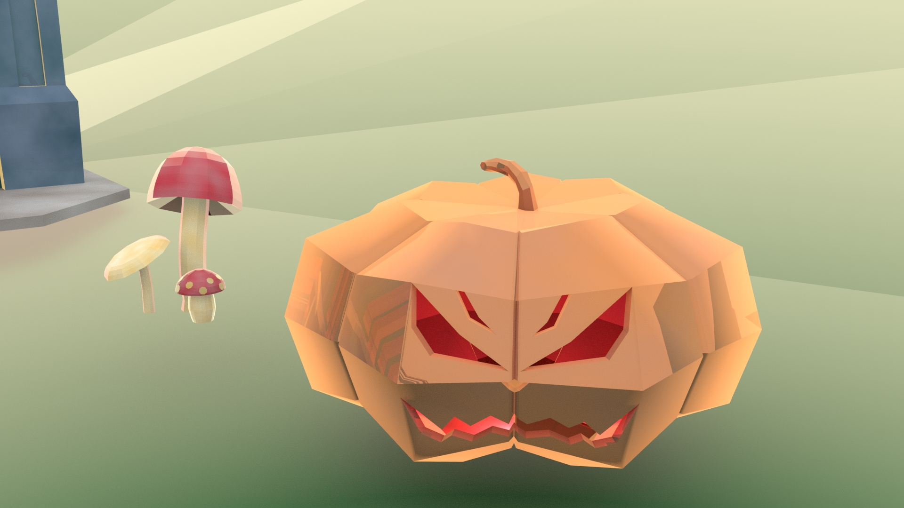
- 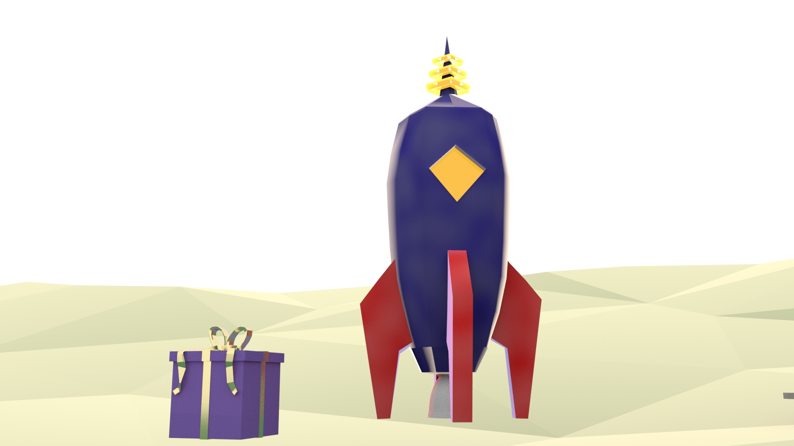
- 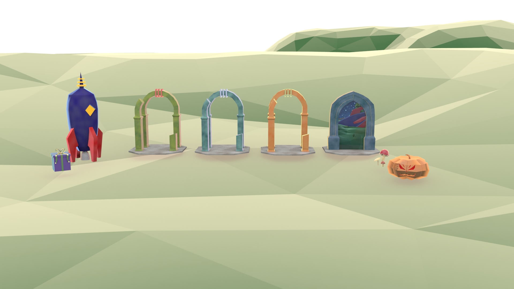
- 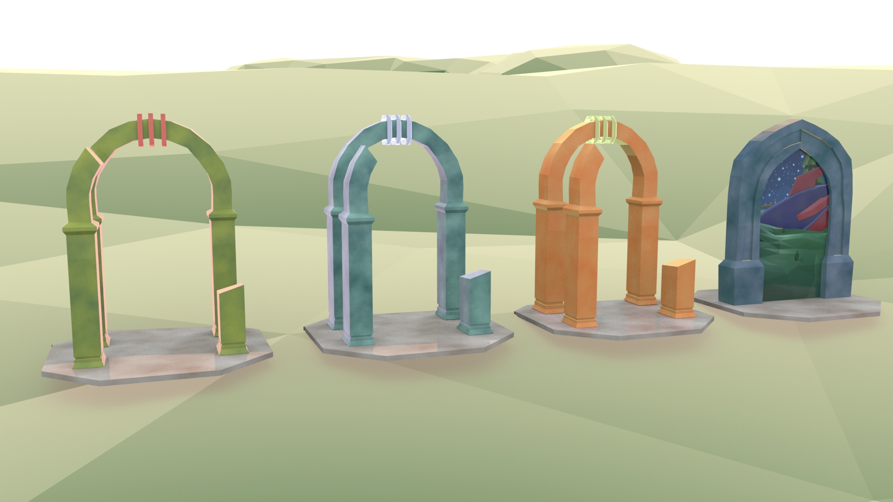
- 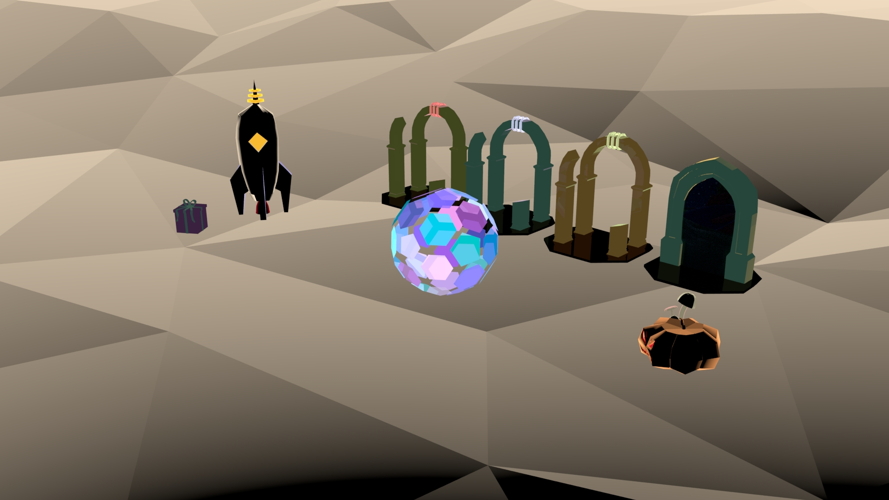
- 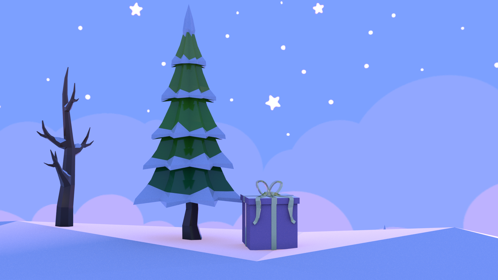
- 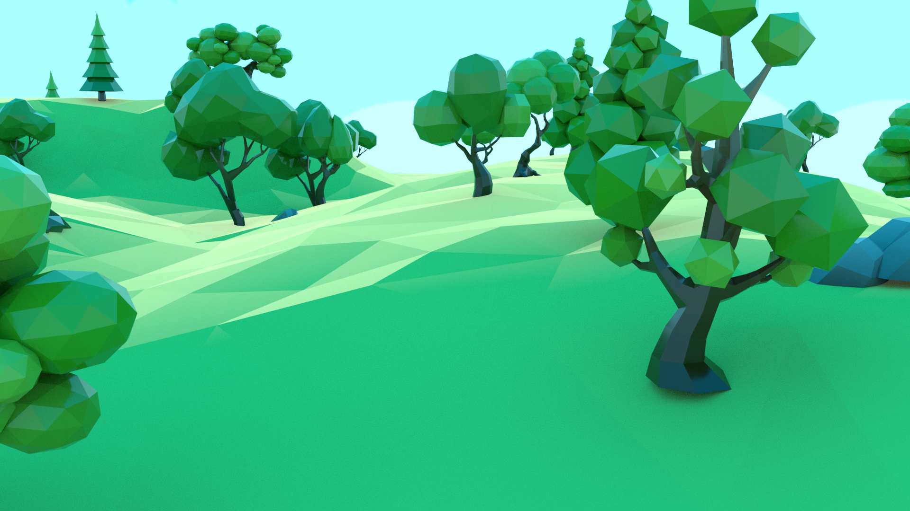
2 - environnements d'AutoMne & nocturne
Pour la deuxième partie du projet, nous avons décidé de nous séparer la mise en place des décors selon nos scène atitrées. Je me suis donc occupé de la scène d'automne et de la scene finale.
- 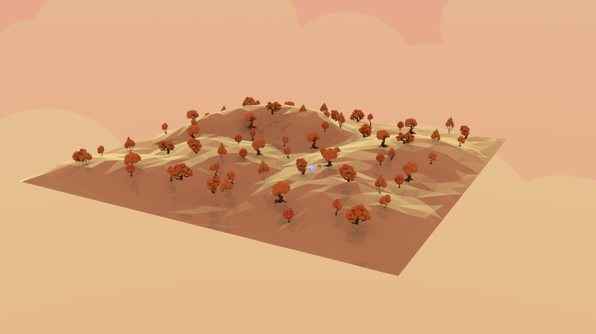
- 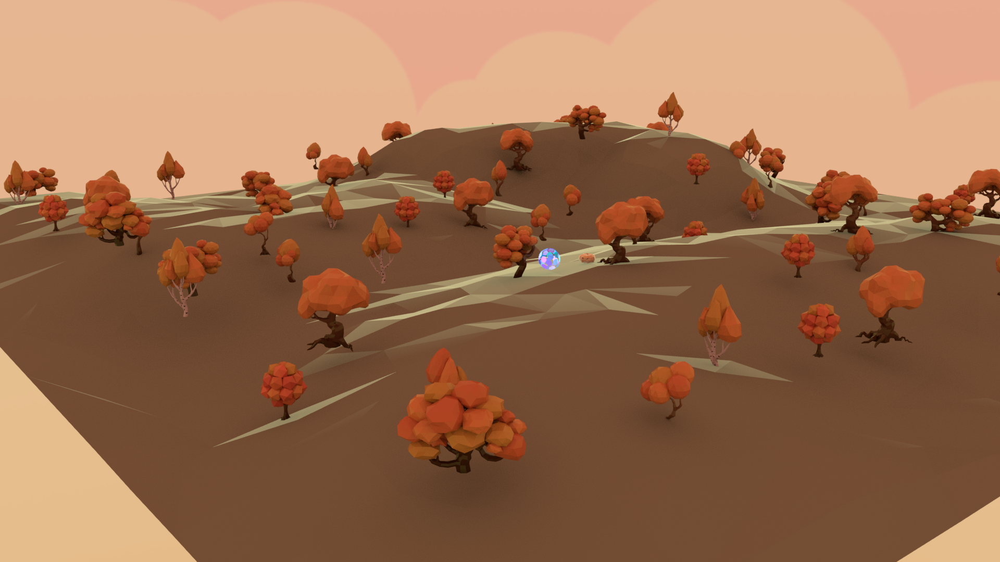
- 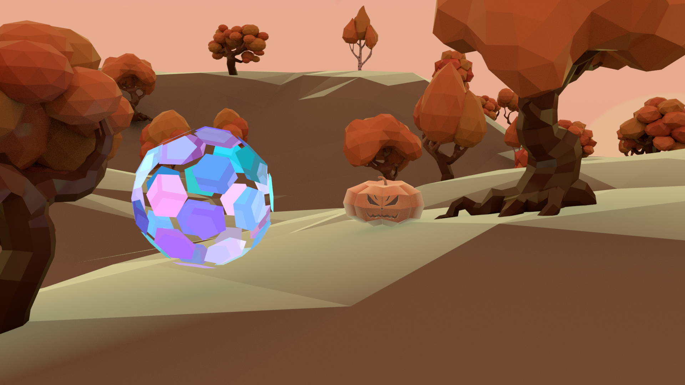
- 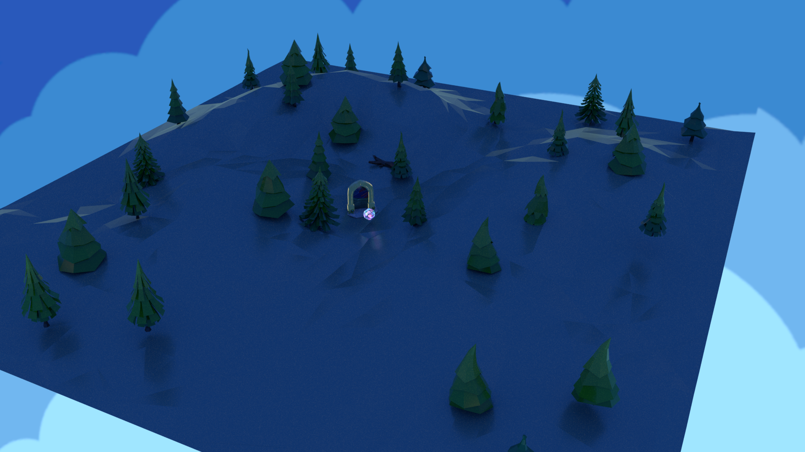
- 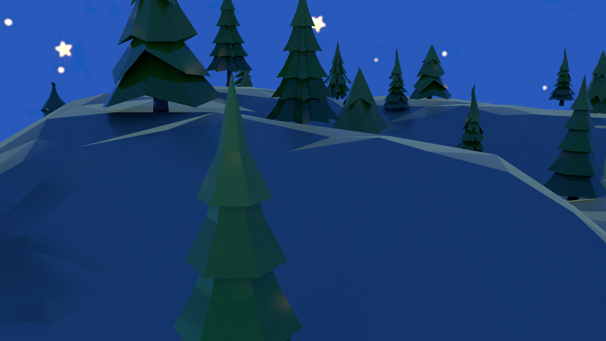
- 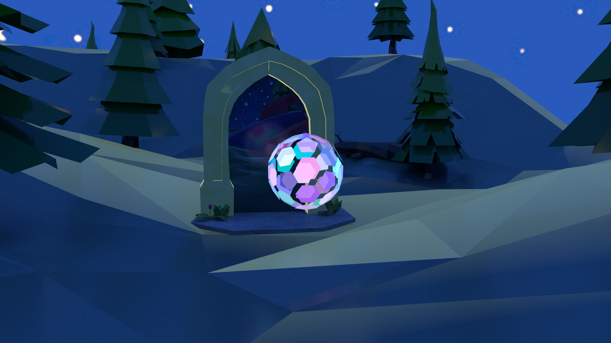
3 - Animation
Pour la dernière partie du projet, nous avons animé nos scènes respectives. Pour ma part, je me suis occupé de l'animation de la sphère et de la caméra dans la scène d'automne afin de créer un sentiment de poursuite.
Ensuite, je me suis attaqué à la scène finale. J'ai ajouter des particules lumineuse émannant du portail avec le module "nParticule" de Maya et j'ai ajuster l'animation du personnage afin que sa course se termine devant le portail. Finalement, j'ai animer la caméra avec un chariot arrière en contre-plongé afin de créer un sentiment d'infériorité du personnage face au portail.